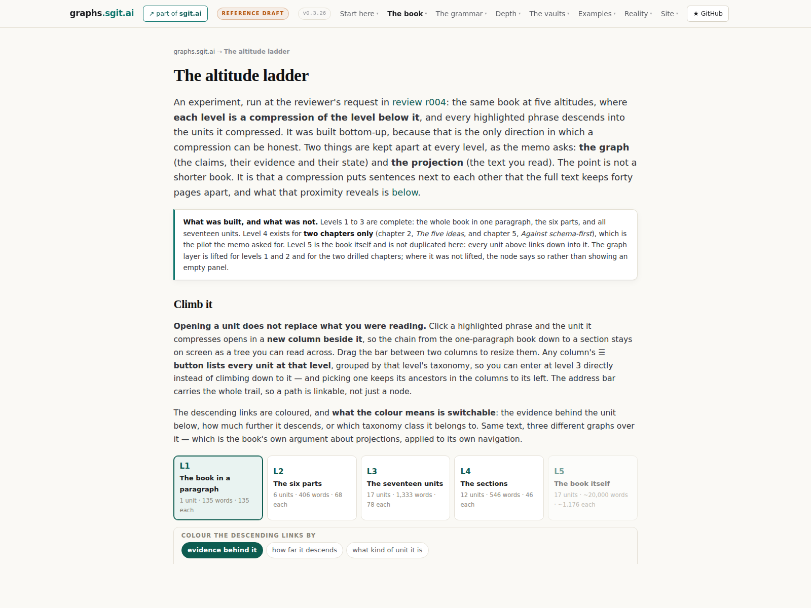
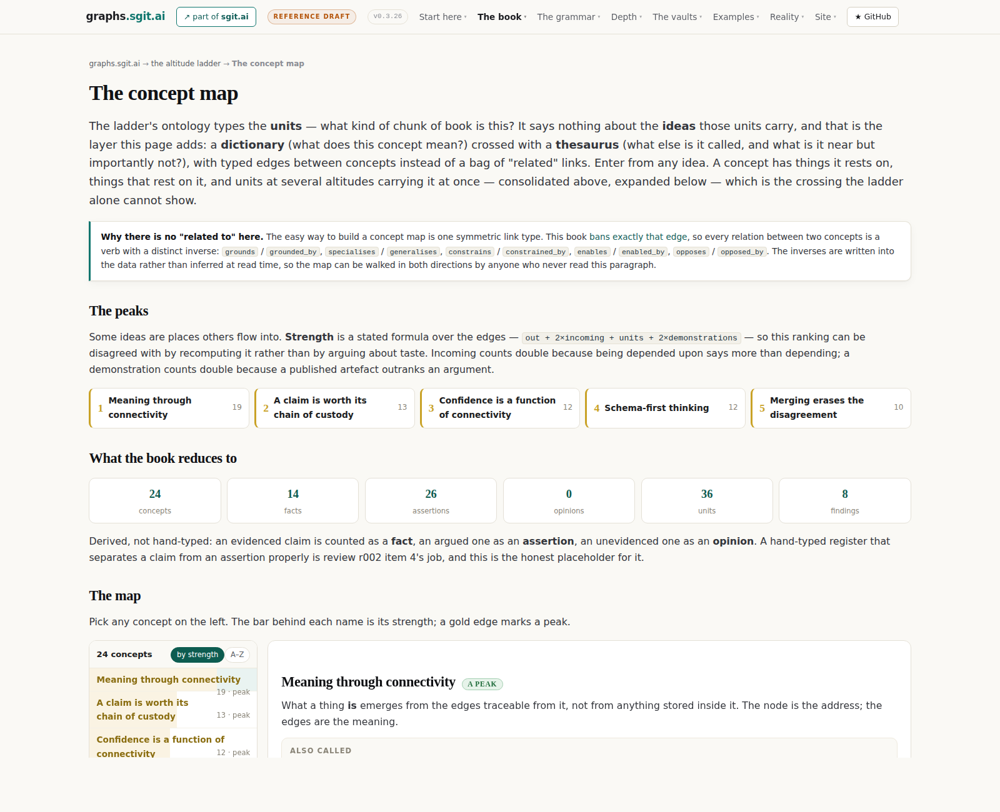
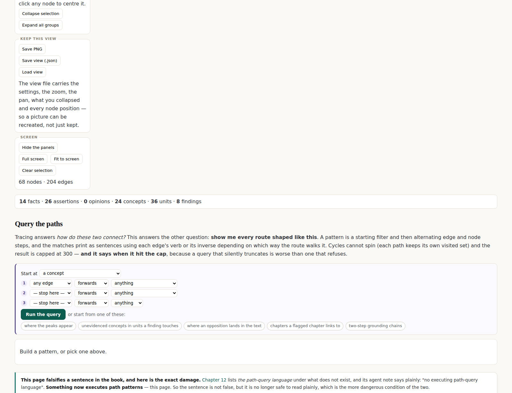
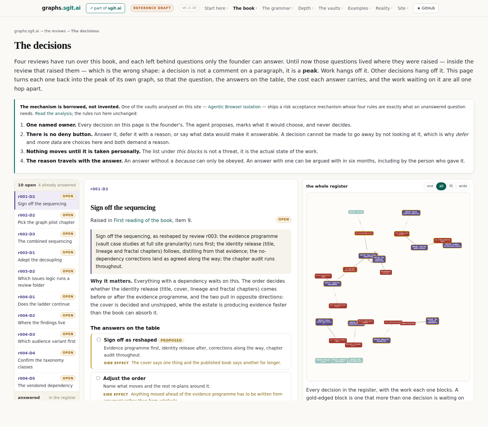
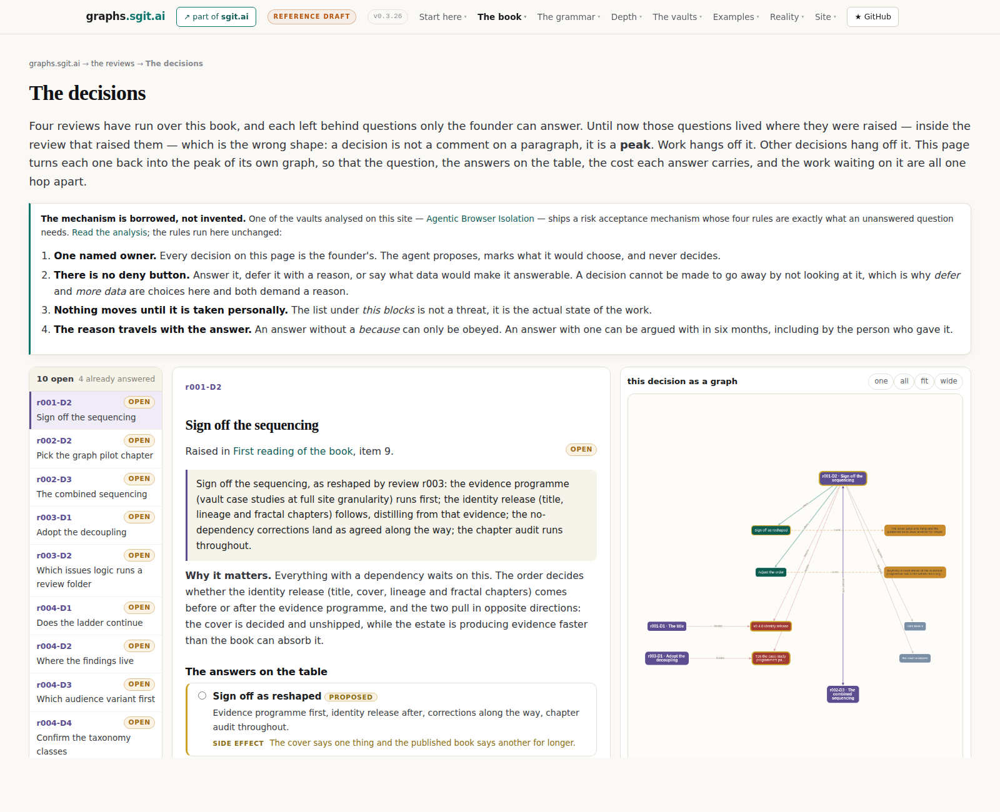
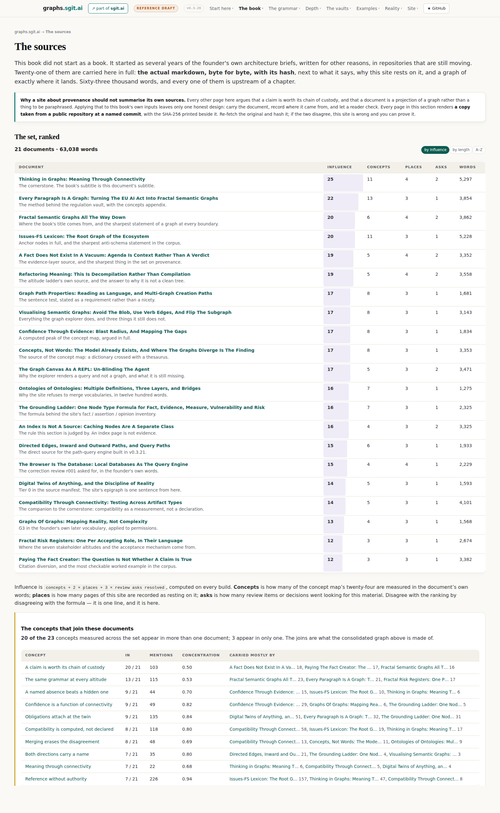
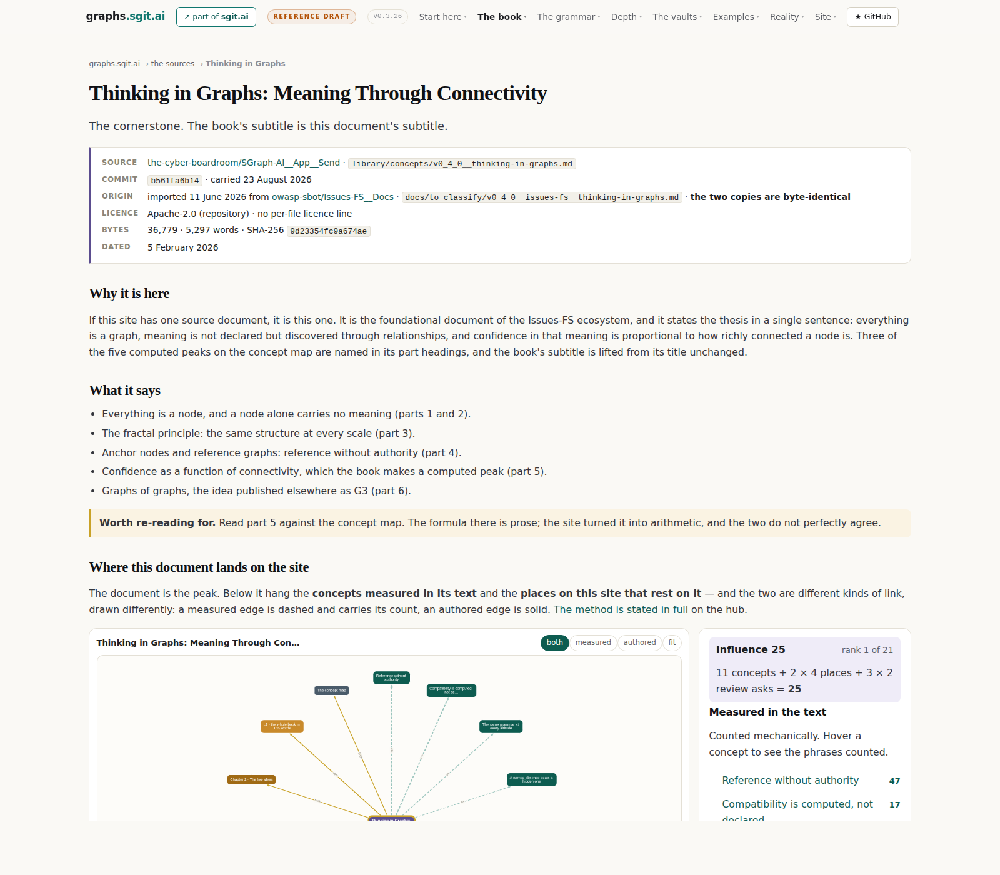

Dev pack v0.3.27: the second book
The plan to write this book again, from the top down, as a graph. It follows two founder memos of 23 August 2026 that cancelled the planned refactor in favour of starting properly: this is the plan to write the plan. Nothing in it is implemented, and file 09 lists the eight questions only the founder can answer.
The three governing rules
- The graph comes before the prose, at every altitude. No unit of text is written until the node it projects exists, carries its typed edges, and its evidence resolves.
- The first book is frozen, and the second book copies from it. Material moves by copy, never by reference, and every copy records where it came from.
- Every claim the book makes about itself is computed on every build. If the build cannot compute it, the book does not assert it.
The pack
| # | File | What it gives you | Raw |
|---|---|---|---|
| 00 | Dev Pack: The Second Book, Written Top Down | Orientation, the three governing rules, and what is already decided. | .md |
| 01 | The Memos, And What Each Instruction Commits Us To | The founder's two memos, verbatim, with every instruction mapped to what it commits the work to. | .md |
| 02 | What Exists Today, And What Happens To Each Of It | The audit. Every unit, section, conclusion and generator, with a carry / lift / rewrite / drop verdict. | .md |
| 03 | Freezing The First Book | How the first edition is frozen, where it lives, and the front page that explains the sequence of events. | .md |
| 04 | The Argument, Top Down | The spine, top down: five statements, their evidence, and the descent through five altitudes. | .md |
| 05 | Architecture: The Decisions, As ADRs | The decisions, as ADRs: five source trees, six node families, computed themes, generated grammar. | .md |
| 06 | The Plumbing | The graph format, the unit format, the generators, and the seven new gates. | .md |
| 07 | The Visualisations | Every view is a compression: which ones are instruments, which work at a single node, the conventions, and eight figures of what exists now. | .md |
| 08 | The Implementation Plan | Seven phases, each ending at a gate, and the two ways the plan fails. | .md |
| 09 | Verification, And What Only The Founder Can Decide | Acceptance criteria, what the rewrite does to the ten open decisions, and the eight questions only the founder can answer. | .md |
The working packs
The pack above is the plan for the second book. These are the packs the agents write while building it: briefs, debriefs, replies between the two agents working this repo, and the standing design documents any future agent is expected to read. The raw markdown is the source of truth; each page renders its own source file, and the table below is regenerated from the directory on every build, so a note added to a pack appears here without anyone remembering to list it.
| Pack | # | File | What it gives you | Raw |
|---|---|---|---|---|
| The Leanpub release | 00 | The Leanpub release — two books, one pair | What ships (two books, at v0.2.0 and v0.1.0, the Universe held back), the account as it actually stands, the method already written in admin/publishing.html, the five things still to build, and the upload-day checklist. | .md |
| 01 | The copy — one set of words, and the post | One set of words: what is ready to upload, what each cover draws and why, the LinkedIn post in full draft with notes on what to cut, the short blurbs, and the bio line that needs replacing. | .md | |
| The non-functional pass | 00 | The non-functional audit — what the estate looks like before the review era | The measured state of the estate at v0.5.16: eight findings with real counts, from a README documenting nine paths that moved a month ago to a test surface that stops at the v2 core, and an honest list of what is already healthy. | .md |
| 01 | The plan — three passes, sized, with the version call | Three passes, sized and ordered by what the review era needs first: the documents an agent reads, then the builders and gates, then the modules and components. Includes the call to wrap in 5.x and open 6.x with the review machinery. | .md | |
| 02 | Pass two — the builders and the gates (v0.5.20, DONE) | Pass two, done: the test harness that was swallowing async failures (and the real bug it was hiding), one test file split into six suites and a runner, a self-test for validate.js, the three book builders folded into admin/build/bookkit/ with both PDFs verified page-for-page, and the two writers that were fighting over book.json. | .md | |
| The book-writing pack | 00 | The book-writing pack — three books from this estate | The commission verbatim, how to run the three sessions, and the three governing rules: the title is locked, every claim is anchored, the reader is on a plane. | .md |
| 01 | The corpus — what to read, where it lives, what wins on conflict | The shared reading list in five layers with fetch paths and skim markers, and the precedence rules when sources disagree. | .md | |
| 02 | Shared conventions — the rules all three book sessions follow | Output shape (markdown, self-rendering pages, one print PDF), the screenshot and time-travel harness, honesty gates, branch discipline for parallel sessions, and the definition of done. | .md | |
| 03 | Entry A — the Universe volume | Book A: the atlas — 40 to 80 concepts as one spread each, grouped by neighbourhood, with a machine twin (universe.json) the book renders from. | .md | |
| 04 | Entry B — the book | Book B: the argument whole — a proposed eight-chapter spine from first principles to the running system, worked examples over abstractions. | .md | |
| 05 | Entry C — the making-of | Book C: the true story for other authors — the loop, the gates, the failures, screenshots re-taken from git tags, and a playbook that stands alone. | .md | |
| The v0.4 retrospective | 00 | The v0.4 retrospective: forty-one releases, one working surface | Forty-one releases in four days, weighed: the seven achievements that compounded, the conclusions, the transferable learnings (persistence makes identity; fit is a decision; the measurement is the discovery), and what v0.5 opens. | .md |
| The book as a graph | 00 | The book as a graph — the activities | Brief 43 asks for the whole book to go through the decomposition built for one pilot document, so JSON becomes the source of truth. The claim was probed first: the machinery does run over all 17 chapters (165 sections, 819 blocks, 26,118 words, 4 to 6 times the pilot), vocabulary saturates in a way that will change the token analysis, and three strains are visible including a book level the generator does not have. Seven activities, each naming what it produces and how it is checked — and the output named before anything is built, because the WCLM taught that a tool without a clear output is a cool idea. | .md |
| The feature tour | 00 | The capability register — what writing a book here actually gets you | Brief 42 asks for part one of the making-of book to be a feature tour of what writing a book here actually gets you. A tour written from memory would break the estate's own rule, so this is the count first: what exists, measured on the day — 3 books built from markdown, byte-identical document rebuild, 72 failure conditions in the release gate, 101 tests, 101 narrated releases, 35 named techniques. Plus the four claims that would be false if made, and the two things part one cannot be written without: screenshots of the workflow, and the founder's own Leanpub failure story. | .md |
| The structure refactor | 00 | The structure refactor — a review, not yet a move | Brief 41 asks for the tree to be restructured around books. The principle and the publishing order are endorsed; one part is pushed back on with measurements, because v1/ and v2/ are timestamps rather than types — 72 of 94 pages in v1 are not the book, and 172 of the 200 frozen files sit outside v1/book/. A four-zone shape is proposed, the cost is counted (236 of 258 URLs change, every frozen path moves), three things that break are named, and the work is phased into four releases. | .md |
| 01 | The workflows, formally | The five workflows this estate actually runs, written down for the first time: the memo-to-release loop, the release ritual, changing a book (which moves two versions), the seven-stage change control, and turning an escaped defect into a gate. Each with its trigger, its steps, which steps are machine-enforced and which are only habit, and its done test — plus the three things that are not yet workflows because they have never been run. | .md | |
| The workflow document | 00 | The workflow document — the change-control record | Brief 45 asks for a source document about workflows, and for it to be connected to the book. The first three phases are additive and were done; the fourth changes a book and is in front of the founder with the cost counted. The map is computed: workflow appears 6 times in the book’s 27,002 words and 64 times across the memos, and every other word in the founder’s account — villager, zone, maturity, pacing — appears zero times. The document ships with 81 anchored nodes and declares itself a one-way projection. Four candidate names for the process, built from counted vocabulary. And the finding that earns a gate: eighteen of twenty-five founder quotations had been smoothed into readability before a script caught them. | .md |
| The naming question | 00 | The naming question — the change-control record | The first real use of the team and of change control, on a deliberately small question: is the making-of book's title right? The map is computed rather than argued (fractal appears 9 times in 31,221 words, six of them naming the other book), four candidates are built only from words the book actually uses, four roles give opinions from their own centres of gravity, and the map disagrees with the founder about who the book is for. Waiting on three decisions. | .md |
| The v0.5 retrospective | 00 | The v0.5 retrospective: three books came out of the surface | Twenty-three releases in three days, weighed: the six achievements that compounded, the six things got wrong and how each was found (four by gates built in the same era), and the estate's weakest remaining point — prose has no freshness gate, which is why the front page denied the books existed for ten releases. | .md |
| The immediate-connection register | 00 | The immediate-connection register | Victor's five patterns mapped to the viewer release by release, two fully specified gaps any agent can build, and the six-point checklist every change to an interactive surface should pass. | .md |
| The universe chat: a plan | 00 | The universe chat: a plan | The chat agent's plan for the universe chat panel, written before anything was built, for the founder to decide what survives. | .md |
| Pinned nodes: a debrief | 00 | Pinned nodes: a debrief | Why anchoring a handful of summits keeps the reader's mental map, the problems the technique solves, and the rule that pins hold only during a layout run. | .md |
| Brief to the chat agent | 00 | Brief: to the agent behind the universe chat | The reader agent's comments on the chat agent's refactor, and the methods and events that would make the chat UX more powerful. | .md |
| 01 | Reply: from the chat agent | The chat agent's answer: what it adopted, what it deferred, and why. | .md | |
| 02 | Follow-up: from the reader agent, after verifying v0.4.22 and v0.4.23 | The follow-up finding: pins placed by chat dissolved on the next layout, with the ask to rebind pin_nodes to the shared pipeline. | .md | |
| 03 | Reply: rebound, and the finding confirmed fixed | The rebind confirmed: the chat agent's verification that the finding is fixed. | .md |
The one thing this pack is built on
The retrospective over the previous fourteen releases established that the visualisations did not produce the insights: the arithmetic behind them did, and the visualisation is how a person notices. Every finding in that run came from converting a sentence somebody wrote into something a build computes. That is why this pack's first constraint is that the generators are load-bearing and the renderers are replaceable, and why ADR-4 makes the book's themes computed rather than declared: a theme is where evidence converges, not where the author says it is.
Where the work starts from
Eight figures, captured from the live site at v0.3.26. They are evidence of the starting point, not designs for the second book. The distinction that matters across all of them is in file 07: every one of the aggregate views produced a finding, and none of the per-item views did.








For an agent
The pack is ten markdown files under /dev-packs/v0.3.27__the-second-book/, and those files are the source of truth: every page here renders one of them client-side and cannot drift from it. Read 00__README.md first for the three governing rules and what is already decided. Status is PROPOSED throughout: nothing in this pack has been implemented, and file 09 separates what is settled from what is waiting on the founder. Do not treat any ADR as decided until the corresponding open question is answered.